# Instalar solo una vez
install.packages(c("ggplot2", "performance", "see", "readxl", "car"))Correlación vs. regresión · Regresión lineal simple · ANOVA · Diagnóstico · Interpretación de coeficientes
2026-10-06
Al terminar la sesión, usted podrá:
R y leer cada parte de su salida.performance.| Parte | Contenido | ¿Qué intentamos responder? |
|---|---|---|
| 1 (hoy) | Correlación vs. regresión, RLS, ANOVA, diagnóstico, interpretación | ¿Cómo cambia y cuando cambia x? |
| 2 | Regresión múltiple, variables categóricas (dummy), ajuste por covariables, selección de variables | ¿Cuál es el efecto de x manteniendo constantes las demás? |
| 3 | Interacciones y modificación del efecto | ¿El efecto de x depende de z? |
| 4 | Algoritmos para la selección de variables | ¿Qué algoritmos podrían ayudar con la selección de variables |
Todo lo que veamos hoy es sienta las bases para las partes 2,3, 4.
'data.frame': 80 obs. of 6 variables:
$ Consumo_Sal : num 1345 1517 1657 1726 1867 ...
$ Tension_Arterial: num 106 115 110 102 112 ...
$ Sexo : chr "Mujer" "Mujer" "Mujer" "Mujer" ...
$ Comorbilidades : int 0 1 1 0 1 0 1 1 1 1 ...
$ Fuma : int 0 0 0 0 0 0 0 0 0 0 ...
$ Edad : int 72 23 59 71 79 18 34 32 20 19 ...80 pacientes: consumo de sal promedio de 10 días (mg/24 h) y tensión arterial sistólica (mmHg) (Pérez Guerrero 2024).
¿El consumo de sal se asocia con la tensión arterial? ¿Qué técnica usaría? Y para ¿Cuántos mmHg aumenta la tensión por cada gramo de sal?
Pearson's product-moment correlation
data: df$Consumo_Sal and df$Tension_Arterial
t = 13.5, df = 78, p-value <0.0000000000000002
alternative hypothesis: true correlation is not equal to 0
95 percent confidence interval:
0.75505 0.89194
sample estimates:
cor
0.83607 (Intercept) Consumo_Sal
74.83910 0.02037 (Intercept) Tension_Arterial
-1812.791 34.316 \[ \hat\beta_1 = r \cdot \frac{s_y}{s_x} \qquad\qquad R^2 = r^2 \;(\text{solo en regresión simple}) \]
[1] 0.02037[1] 0.69901Si estandarizamos ambas variables (media 0, DE 1), la pendiente es \(r\). La correlación es una regresión “sin unidades”.
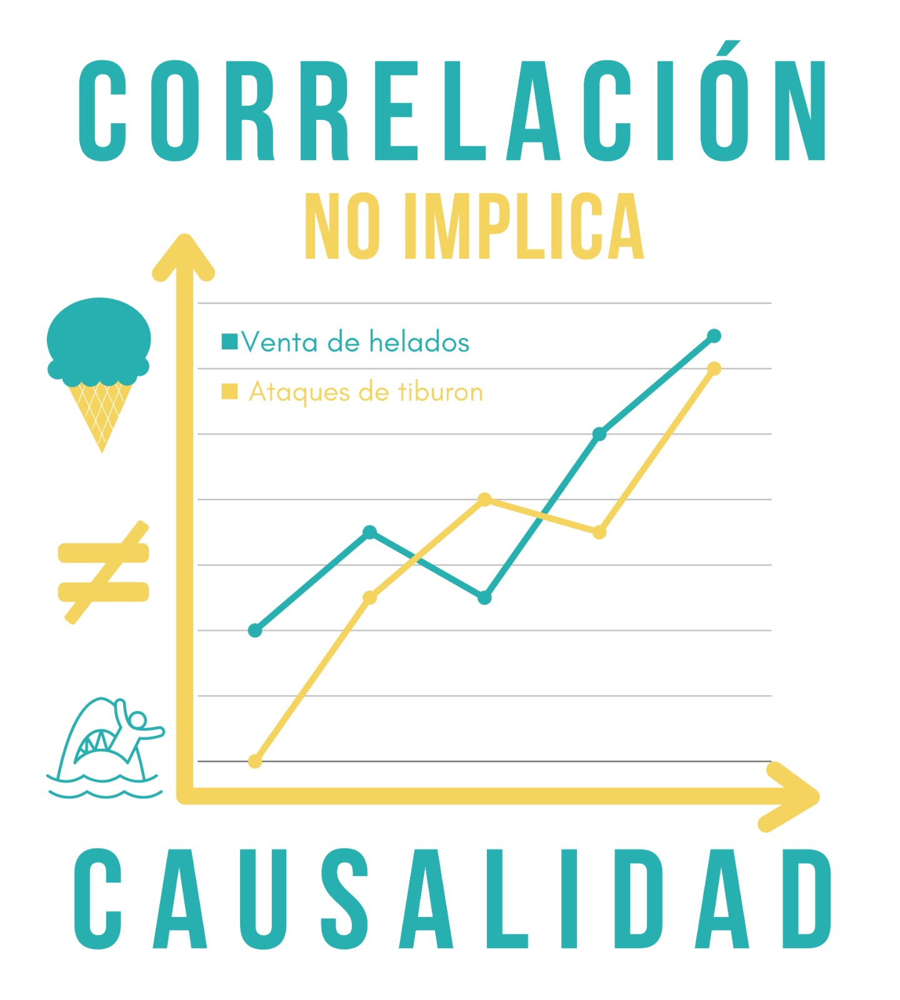
lm() estima asociaciones condicionales, no efectos causales.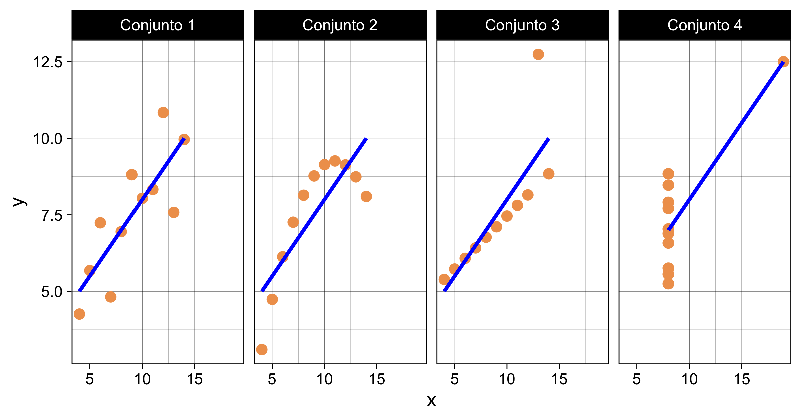
[1] 0.816 0.816 0.816 0.817Mismo \(r\), misma recta (\(\hat y = 3 + 0.5x\)), mismo \(R^2\) (Anscombe 1973). Solo el conjunto 1 es apropiado para una regresión lineal.
Un grupo de investigadores quiere evaluar el efecto del consumo diario de sal (mg/24 h) sobre la tensión arterial sistólica (mmHg) en 80 pacientes. Promediaron 10 días de mediciones (Pérez Guerrero 2024).
Antes de ajustar una regresión, pregúntese:
Si no puede responder estas preguntas, no haga una regresión. No es que no sea necesaria, simplemente puede que aún no sea tiempo.
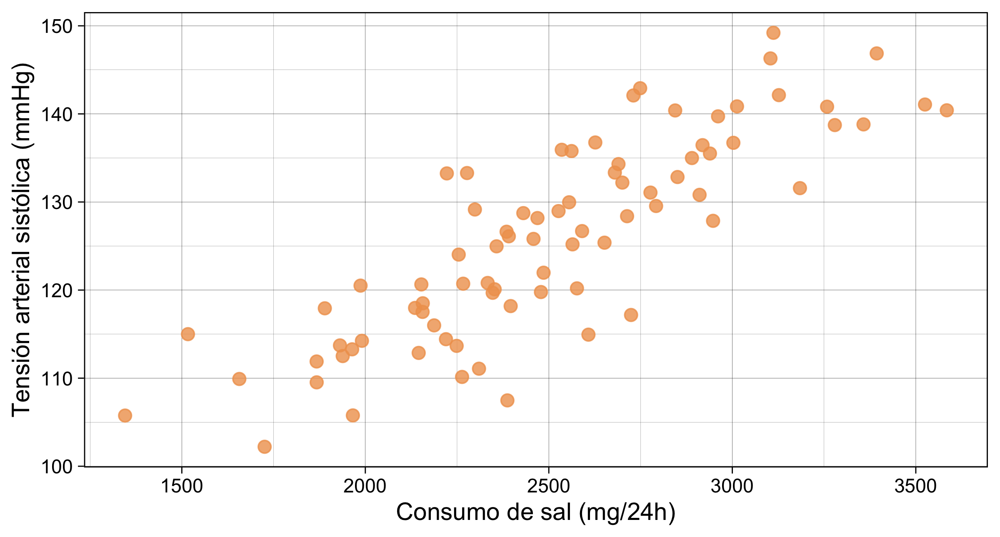
Figura 1
\[ y_i = \underbrace{\beta_0 + \beta_1 x_i}_{\text{parte determinística}} + \underbrace{\varepsilon_i}_{\text{parte aleatoria}}, \qquad \varepsilon_i \sim N(0, \sigma^2) \]
| Símbolo | Nombre | En el ejemplo |
|---|---|---|
| \(y_i\) | Variable dependiente (respuesta) | Tensión arterial (mmHg) |
| \(x_i\) | Variable independiente (predictor) | Consumo de sal (mg/24 h) |
| \(\beta_0\) | Intercepto | Tensión esperada cuando la sal = 0 |
| \(\beta_1\) | Pendiente | Cambio esperado en y por 1 unidad de x |
| \(\varepsilon_i\) | Error | Lo que el modelo no explica |
| \(\sigma^2\) | Varianza del error | Qué tan dispersos están los puntos alrededor de la recta |
Los \(\beta\) son parámetros poblacionales; con la muestra obtenemos estimaciones \(\hat\beta_0, \hat\beta_1\) (Denis 2020), (Pérez Guerrero 2024).
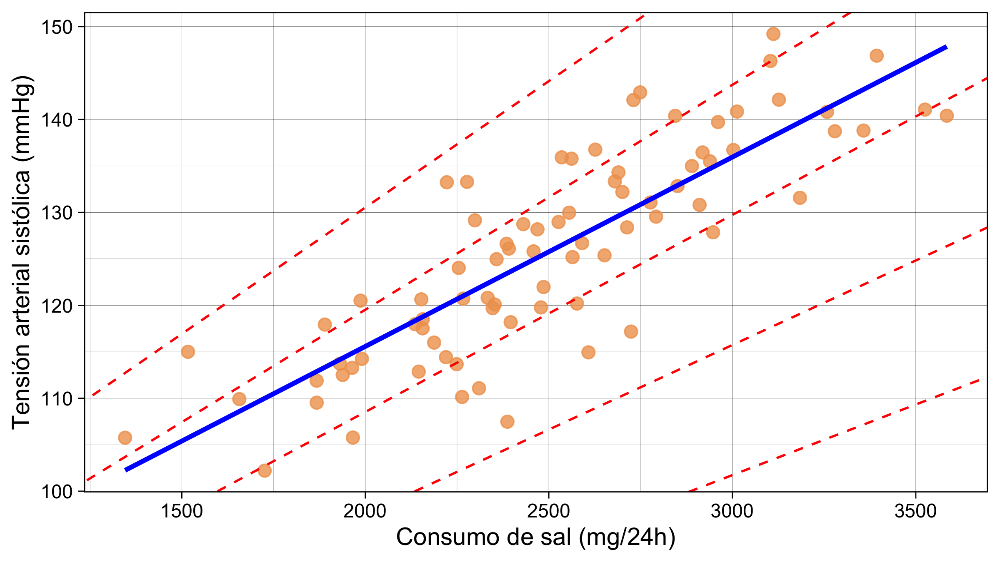
Figura 2
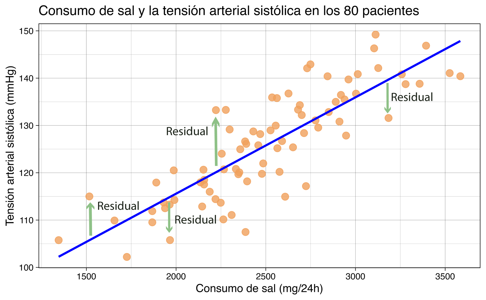
\[ e_i = y_i - \hat y_i \qquad\text{(observado} - \text{predicho)} \]
La recta de mínimos cuadrados es la que minimiza la suma de los residuales al cuadrado:
\[ SSE = \sum_{i=1}^{n} e_i^2 = \sum_{i=1}^{n}\left[y_i - (\hat\beta_0 + \hat\beta_1 x_i)\right]^2 \]
Las soluciones son:
\[ \hat{\beta}_1 = \frac{\sum_{i=1}^n (x_i - \bar{x})(y_i - \bar{y})}{\sum_{i=1}^n (x_i - \bar{x})^2} \qquad\qquad \hat{\beta}_0 = \bar{y} - \hat{\beta}_1 \bar{x} \]
En forma matricial (la que usa R y la que generaliza a regresión múltiple):
\[ \hat{\boldsymbol\beta} = (X^T X)^{-1} X^T \mathbf{y} \]
¿Por qué al cuadrado? Porque \(\sum e_i = 0\) siempre en OLS: los errores positivos y negativos se cancelan. La recta pasa por \((\bar x, \bar y)\).
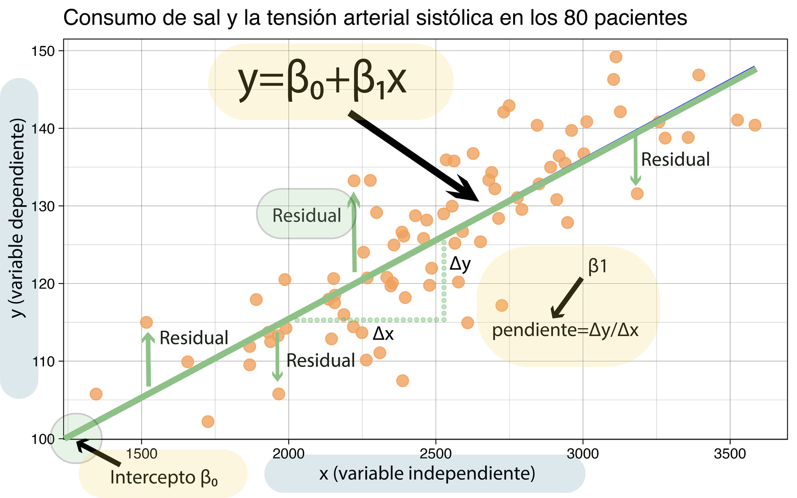
lm()Estructura general: lm(y ~ x, data = datos)
La función lm se utiliza para ajustar modelos lineales. Puede emplearse para realizar análisis de regresión, análisis de varianza de un solo estrato y análisis de covarianza.
Uso:
lm()Estructura general: lm(y ~ x, data = datos)
Call:
lm(formula = Tension_Arterial ~ Consumo_Sal, data = df)
Residuals:
Min 1Q Median 3Q Max
-15.988 -3.424 -0.313 3.531 13.142
Coefficients:
Estimate Std. Error t value Pr(>|t|)
(Intercept) 74.83910 3.86125 19.4 <0.0000000000000002 ***
Consumo_Sal 0.02037 0.00151 13.5 <0.0000000000000002 ***
---
Signif. codes: 0 '***' 0.001 '**' 0.01 '*' 0.05 '.' 0.1 ' ' 1
Residual standard error: 6.21 on 78 degrees of freedom
Multiple R-squared: 0.699, Adjusted R-squared: 0.695
F-statistic: 181 on 1 and 78 DF, p-value: <0.0000000000000002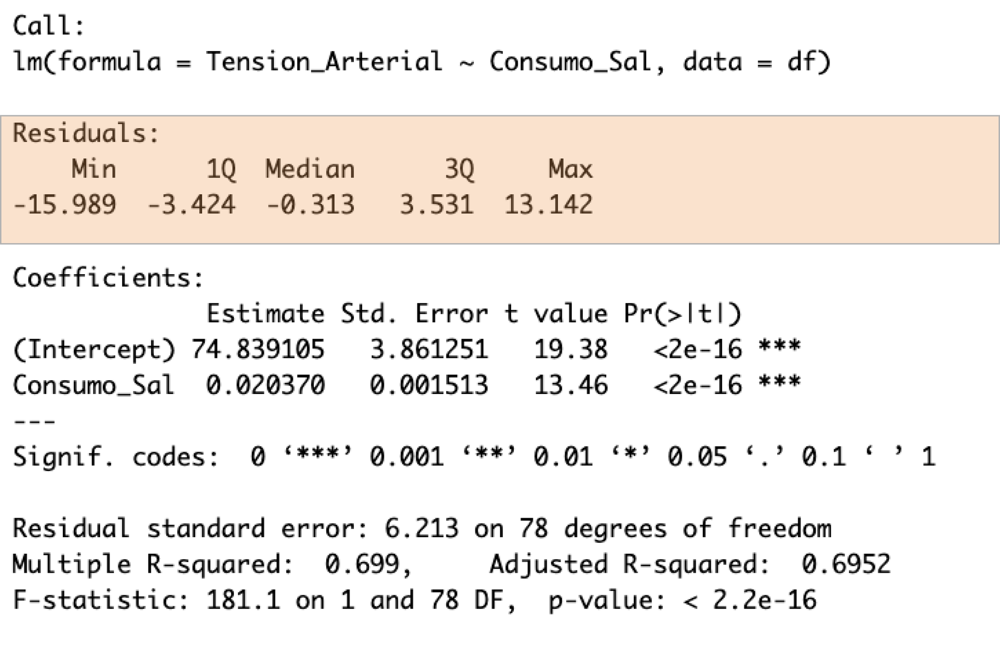
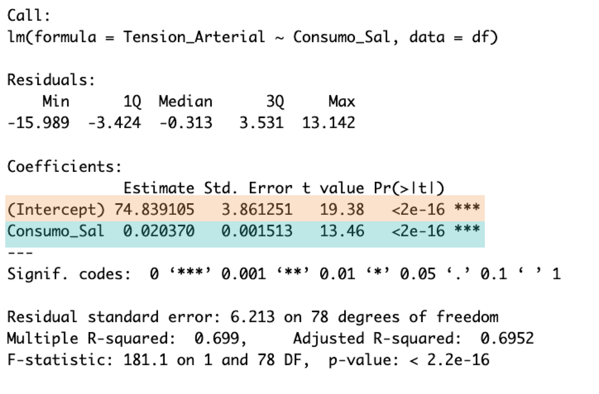
| Columna | Qué es |
|---|---|
Estimate |
\(\hat\beta\): intercepto y pendiente |
Std. Error |
Precisión de la estimación, \(SE(\hat\beta)\) |
t value |
\(t = \hat\beta / SE(\hat\beta)\), prueba de \(H_0: \beta = 0\) con \(n-2\) gl |
Pr(>|t|) |
Valor p de esa prueba |
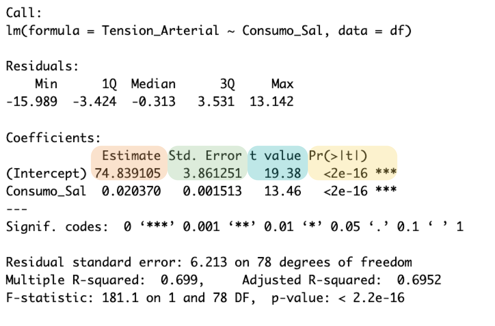
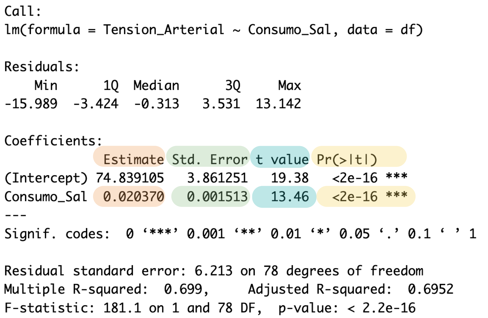
2.5 % 97.5 %
(Intercept) 67.151944 82.526266
Consumo_Sal 0.017357 0.023383 0.5 % 99.5 %
(Intercept) 64.644088 85.034122
Consumo_Sal 0.016374 0.024366\[ R^2_{aj} = 1 - \frac{(1 - R^2)(n - 1)}{n - p - 1} \]
fit lwr upr
1 115.58 113.51 117.65
2 135.95 133.93 137.97 fit lwr upr
1 115.58 103.04 128.12
2 135.95 123.42 148.48El intervalo de predicción siempre es más ancho: suma la incertidumbre de la recta más la variabilidad individual (\(\sigma^2\)).
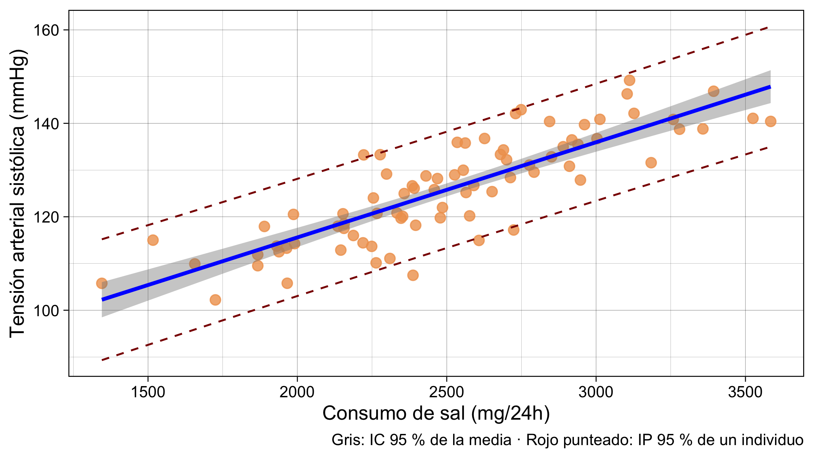
Figura 3
No extrapole. Con 6 000 mg/24 h el modelo “predice” 197 mmHg, pero nunca observamos ese consumo.
¿Cuánto se aleja cada tensión arterial de la media? Esa distancia se descompone en dos:
\[ \underbrace{(y_i - \bar y)}_{\text{total}} = \underbrace{(\hat y_i - \bar y)}_{\text{explicada por la recta}} + \underbrace{(y_i - \hat y_i)}_{\text{residual}} \]
Regresión y ANOVA hacen lo mismo: particionar la variabilidad en lo que el modelo explica y lo que no (Denis 2020).
| Fuente de variación | df | Suma de cuadrados | Cuadrados medios | F |
|---|---|---|---|---|
| Regresión | \(1\) | \(RegSS = \sum(\hat{y}_i-\bar{y})^2\) | \(RegMS = \dfrac{\sum(\hat{y}_i-\bar{y})^2}{1}\) | \(F = \dfrac{RegMS}{MSE}\) |
| Error | \(n-2\) | \(SSE = \sum(y_i-\hat{y}_i)^2\) | \(MSE = \dfrac{\sum(y_i-\hat{y}_i)^2}{n-2}\) | |
| Total | \(n-1\) | \(SST = \sum(y_i-\bar{y})^2\) |
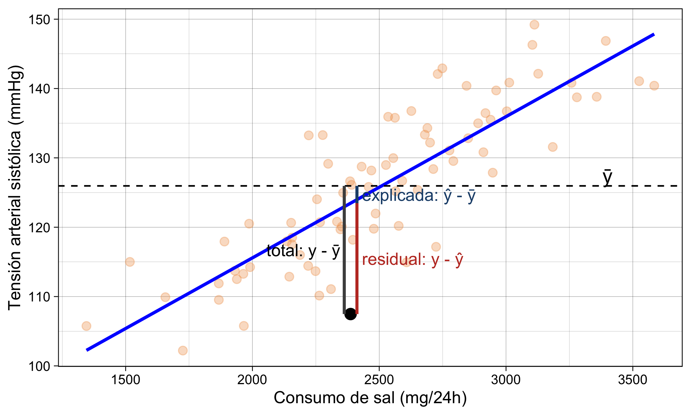
Figura 4
anova()Analysis of Variance Table
Response: Tension_Arterial
Df Sum Sq Mean Sq F value Pr(>F)
Consumo_Sal 1 6992 6992 181 <0.0000000000000002 ***
Residuals 78 3011 39
---
Signif. codes: 0 '***' 0.001 '**' 0.01 '*' 0.05 '.' 0.1 ' ' 1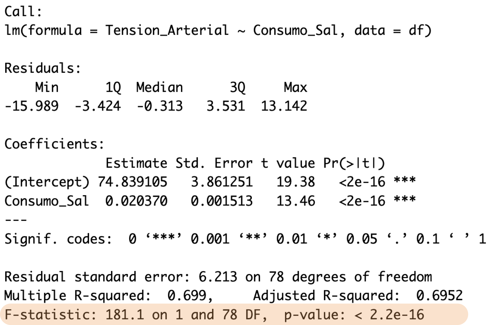
summary()
Call:
lm(formula = Tension_Arterial ~ Consumo_Sal, data = df)
Residuals:
Min 1Q Median 3Q Max
-15.988 -3.424 -0.313 3.531 13.142
Coefficients:
Estimate Std. Error t value Pr(>|t|)
(Intercept) 74.83910 3.86125 19.4 <0.0000000000000002 ***
Consumo_Sal 0.02037 0.00151 13.5 <0.0000000000000002 ***
---
Signif. codes: 0 '***' 0.001 '**' 0.01 '*' 0.05 '.' 0.1 ' ' 1
Residual standard error: 6.21 on 78 degrees of freedom
Multiple R-squared: 0.699, Adjusted R-squared: 0.695
F-statistic: 181 on 1 and 78 DF, p-value: <0.0000000000000002En anova() |
En summary() |
Significado |
|---|---|---|
| \(SSR/SST = 6992.3/10003.2\) | Multiple R-squared: 0.699 | SSR: suma de cuadrados de la regresión; SST: suma de cuadrados total. Su cociente corresponde a \(R^2\), la proporción de variabilidad explicada por el modelo. |
| \(\sqrt{MSE} = \sqrt{38.6}\) | Residual standard error: 6.213 | MSE: cuadrado medio del error (Mean Squared Error). Su raíz estima la desviación estándar de los residuos (\(\sigma\)). |
| \(F = 181.1\) con 1 y 78 gl | F-statistic: 181.1 on 1 and 78 DF | F: estadístico F, compara la variabilidad explicada por el modelo con la variabilidad residual. gl/DF: grados de libertad (degrees of freedom). |
| \(F = t^2 = 13.46^2\) | t de la pendiente = 13.46 | En regresión lineal simple, \(F=t^2\). Ambas pruebas evalúan \(H_0:\beta_1=0\). |
El F global compara dos modelos:
Analysis of Variance Table
Model 1: Tension_Arterial ~ 1
Model 2: Tension_Arterial ~ Consumo_Sal
Res.Df RSS Df Sum of Sq F Pr(>F)
1 79 10003
2 78 3011 1 6992 181 <0.0000000000000002 ***
---
Signif. codes: 0 '***' 0.001 '**' 0.01 '*' 0.05 '.' 0.1 ' ' 1\[ F = \frac{(SSE_{nulo} - SSE_{completo}) / (gl_{nulo} - gl_{completo})}{SSE_{completo} / gl_{completo}} \]
Esta es la herramienta para comparar modelos en la parte 2: ¿agregar una variable reduce significativamente el error?
| Función | Tipo de SC | Qué prueba | Cuándo importa |
|---|---|---|---|
summary(modelo) (última línea) |
— | F global: todos los \(\beta = 0\) | Siempre |
anova(modelo) |
Secuencial (tipo I) | Cada término en el orden en que entra | Múltiple: el orden cambia el resultado |
anova(m0, m1) |
Modelos anidados | ¿El modelo grande mejora al pequeño? | Selección y comparación de modelos |
car::Anova(modelo, type = 2) |
Tipo II | Cada término ajustado por los demás | Múltiple sin interacciones |
car::Anova(modelo, type = 3) |
Tipo III | Cada término ajustado por todo (incl. interacciones) | Con interacciones (requiere contrastes adecuados) |
Anova Table (Type II tests)
Response: Tension_Arterial
Sum Sq Df F value Pr(>F)
Consumo_Sal 6992 1 181 <0.0000000000000002 ***
Residuals 3011 78
---
Signif. codes: 0 '***' 0.001 '**' 0.01 '*' 0.05 '.' 0.1 ' ' 1Con un solo predictor todas coinciden. En la parte 2 veremos cómo divergen.
Df Sum Sq Mean Sq F value Pr(>F)
Fuma_f 2 6251 3126 64.2 <0.0000000000000002 ***
Residuals 77 3752 49
---
Signif. codes: 0 '***' 0.001 '**' 0.01 '*' 0.05 '.' 0.1 ' ' 1Analysis of Variance Table
Response: Tension_Arterial
Df Sum Sq Mean Sq F value Pr(>F)
Fuma_f 2 6251 3126 64.2 <0.0000000000000002 ***
Residuals 77 3752 49
---
Signif. codes: 0 '***' 0.001 '**' 0.01 '*' 0.05 '.' 0.1 ' ' 1ANOVA de una vía, prueba t y regresión son casos del modelo lineal general. Cómo se codifica Fuma_f dentro de lm() (variables dummy) es tema de la parte 2.
| Supuesto | Qué significa | Si se viola… |
|---|---|---|
| Linealidad | La media de y cambia linealmente con x | \(\hat\beta\) sesgados; el modelo está mal especificado |
| Independencia | Los errores no se relacionan entre sí (no mediciones repetidas, no clusters) | EE subestimados, p demasiado pequeños |
| Normalidad | Los residuales (no las variables) son ≈ normales | IC y p poco fiables con n pequeña |
| Equal variance (homocedasticidad) | Varianza del error constante a lo largo de \(\hat y\) | EE incorrectos |
| Sin observaciones influyentes | Ningún punto “jala” la recta por sí solo | Coeficientes dependientes de 1–2 pacientes |
La normalidad es el supuesto menos crítico con muestras grandes; linealidad e independencia, los más (Schmidt y Finan 2018; Fox 2016).
plot(modelo)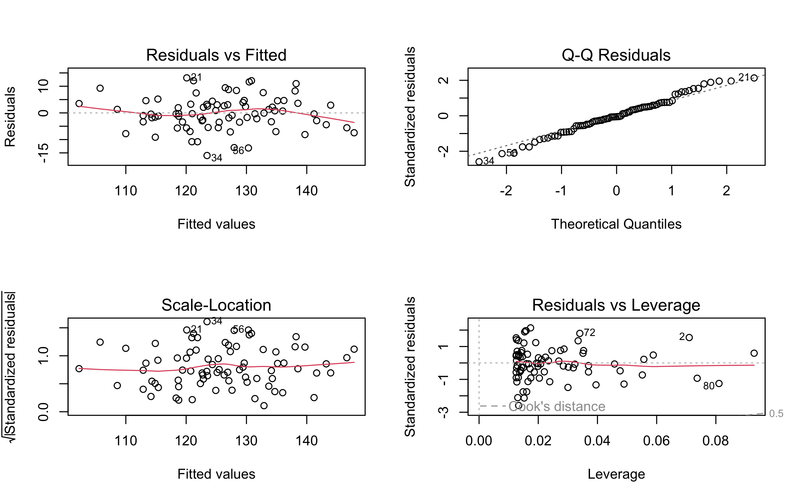
performance::check_model()performance::check_model()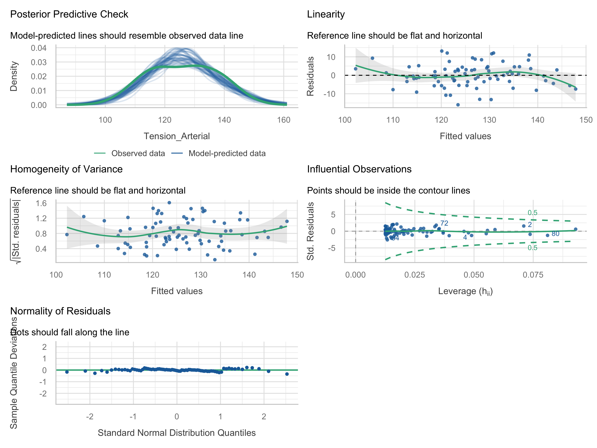
check_model()| Panel | Pregunta | Lo que queremos ver |
|---|---|---|
| Posterior predictive check | ¿Los datos simulados por el modelo se parecen a los observados? | Líneas azules que envuelven la verde |
| Linearity | ¿Hay curvatura en residuales vs. ajustados? | Línea de referencia plana y horizontal |
| Homogeneity of variance | ¿La dispersión cambia con \(\hat y\)? | Línea plana y horizontal |
| Influential observations | ¿Algún punto fuera de las curvas de Cook? | Todos los puntos dentro de las líneas punteadas |
| Normality of residuals | ¿Los residuales siguen la distribución normal? | Puntos sobre la línea (bandas incluyen la línea) |
En regresión múltiple aparece además el panel de colinealidad (VIF), que veremos en la parte 2 (Lüdecke et al. 2021).
performanceOK: residuals appear as normally distributed (p = 0.719).OK: Error variance appears to be homoscedastic (p = 0.859).OK: Residuals appear to be independent and not autocorrelated (p = 0.650).OK: No outliers detected.
- Based on the following method and threshold: cook (0.7).
- For variable: (Whole model)Las pruebas complementan a los gráficos, no los sustituyen. Con n grande detectan desviaciones irrelevantes; con n pequeña no detectan problemas serios.
check_outliers()).[1] 7[1] 0.091438[1] 3Apalancamiento alto ≠ influyente. En regresión simple, los pacientes con consumos extremos siempre tienen \(h_{ii}\) alto; lo que importa es si además mueven la recta (Cook) (Denis 2020).
# Indices of model performance
AIC | AICc | BIC | R2 | R2 (adj.) | RMSE | Sigma
---------------------------------------------------------
523.3 | 523.6 | 530.4 | 0.699 | 0.695 | 6.135 | 6.213R2, R2 (adj.): proporción de varianza explicada.RMSE / Sigma: error típico de predicción (mmHg).AIC, BIC: útiles para comparar modelos (menor = mejor); los usaremos en la parte 2 con compare_performance().set.seed(123)
n_sim <- 100
x_sim <- runif(n_sim, 0, 10)
y_sim <- 2 + 3 * x_sim + rnorm(n_sim, sd = 0.5 + 0.8 * x_sim) # la varianza crece con x
x_sim <- c(x_sim, 9.5) # agregamos un paciente muy atípico
y_sim <- c(y_sim, -15)
malo <- data.frame(x = x_sim, y = y_sim)
modelo_malo <- lm(y ~ x, data = malo)
check_heteroscedasticity(modelo_malo)Warning: Heteroscedasticity (non-constant error variance) detected (p < .001).Warning: Non-normality of residuals detected (p < .001).1 outlier detected: case 101.
- Based on the following method and threshold: cook (0.7).
- For variable: (Whole model).check_model()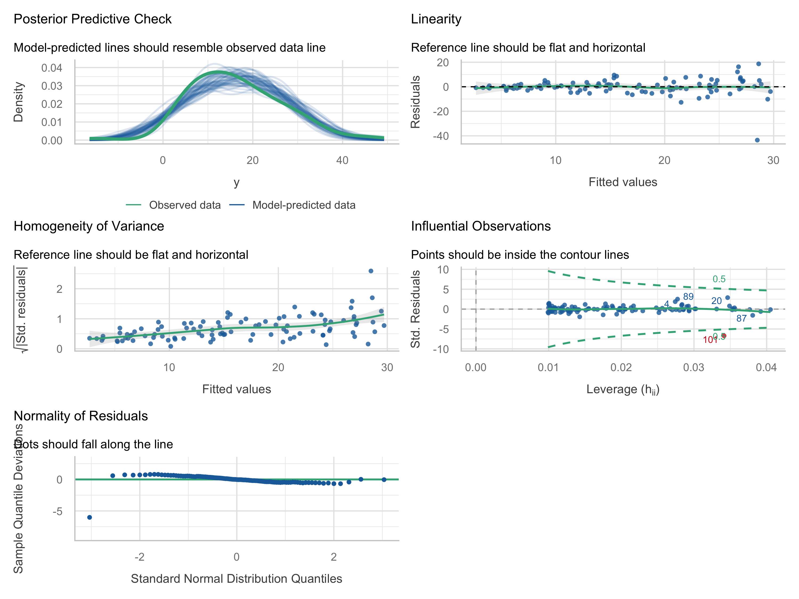
| Problema | Opciones |
|---|---|
| No linealidad | Transformar x (log, raíz), términos polinomiales, splines |
| Heterocedasticidad | Transformar y (log), errores estándar robustos (sandwich), mínimos cuadrados ponderados |
| No normalidad | Con n grande suele bastar; bootstrap de coeficientes; revisar si es por atípicos |
| No independencia | Modelos mixtos, GEE (medidas repetidas, clusters) |
| Observaciones influyentes | Verificar captura; analizar con y sin ellas y reportar ambos; nunca eliminar solo por “no ajustar” |
Diagnosticar no es un trámite: es parte del análisis y debe reportarse en métodos.
Por cada [1 unidad de x] adicional, [y] fue en promedio [\(\hat\beta_1\) unidades de y] mayor/menor (IC 95 %: [li, ls]; p = [valor]).
Siempre responda:
1 mg de sal es clínicamente irrelevante. Expresemos la sal en gramos:
(Intercept) Sal_g
74.839 20.370 2.5 % 97.5 %
(Intercept) 67.152 82.526
Sal_g 17.357 23.383Por cada gramo/24 h adicional de sal, la tensión sistólica fue en promedio 20.4 mmHg mayor (IC 95 %: 17.4 a 23.4). Mismo modelo, mismo p, mismo \(R^2\): solo cambian las unidades de \(\hat\beta_1\).
(Intercept) Sal_c
125.95987 0.02037 Centrar será muy importante en las interacciones.
LungCapData: 725 personas de 3 a 19 años (Mike Marin, statslectures).
2.5 % 97.5 %
(Intercept) -13.99683 -14.71823 -13.27543
Height_cm 0.13274 0.12839 0.13709 2.5 % 97.5 %
(Intercept) 7.86315 7.78356 7.94274
Height_c 0.13274 0.12839 0.13709¿Qué pasaría con la interpretación si centráramos en 150 cm en lugar de la media?
2.5 % 97.5 %
(Intercept) 1.14686 0.78655 1.50717
Age 0.54485 0.51705 0.57265[1] 3 19La linealidad solo se sostiene dentro del rango observado. En adultos la capacidad pulmonar disminuye con la edad.
bodyfat: 252 hombres; densidad corporal (g/cm³) y circunferencia abdominal (cm).
2.5 % 97.5 %
(Intercept) 1.186087 1.173768 1.198407
Abdomen_10 -0.014101 -0.015423 -0.012779 2.5 % 97.5 %
(Intercept) 125.121815 117.91437 132.32926
Edad 0.016059 -0.11333 0.14545[1] 0.00078206 2.5 % 97.5 %
(Intercept) 123.8095 120.16249 127.4565
Comorbilidades 4.0007 -0.97378 8.9752 0 1
123.81 127.81 ¿Qué pasa si agregamos el consumo de sal al modelo?
Comorbilidades
6.0527 En el modelo completo del libro (sal + comorbilidades + tabaquismo + edad) el coeficiente es 5.91 mmHg (Pérez Guerrero 2024).
El efecto de tener comorbilidades pasa de 4.0 mmHg (no significativo) a ≈ 6 mmHg al ajustar por el consumo de sal. ¿Por qué cambiaría un coeficiente al agregar otra variable? → Parte 2: ajuste por covariables y confusión.
(Intercept) scale(Consumo_Sal)
0.000 0.836 | Situación | Qué hacer con \(\hat\beta_1\) | Qué hacer con \(\hat\beta_0\) |
|---|---|---|
| Unidad de x muy pequeña (mg) | Reescalar (g, 10 cm, 5 años) | — |
| x = 0 fuera del rango | — | Centrar x (media o valor de referencia) |
| Pendiente negativa | “y es en promedio … menor” | — |
| IC incluye 0 | “No hay evidencia de asociación” | — |
| x binaria (0/1) | Diferencia de medias entre grupos | Media del grupo de referencia (0) |
| x estandarizada | Cambio en DE de y por 1 DE de x (= r) | 0 |
anova(m0, m1) compara modelos anidados.check_model() + pruebas + criterio.Con LungCapData:
LungCap ~ Height_cm y LungCap ~ Age.anova().check_model(). ¿Cumplen los supuestos? ¿Qué panel le preocupa más?compare_performance()).Próxima sesión: ¿qué pasa si metemos edad y estatura al mismo tiempo? → regresión múltiple, variables dummy y selección de variables.
Bioestadística Avanzada· Modelos lineales — Parte 1